Islandia na własną rękę: gotowe plany podróży i rady z pierwszej ręki
Trasy dzień po dniu, noclegi, samochód, ceny, pogoda i szlaki piesze. Wszystko, czego potrzebujesz, żeby samodzielnie zaplanować wyjazd na Islandię.
Wszystkie poradniki także po angielsku: Rumbo Mundo in English
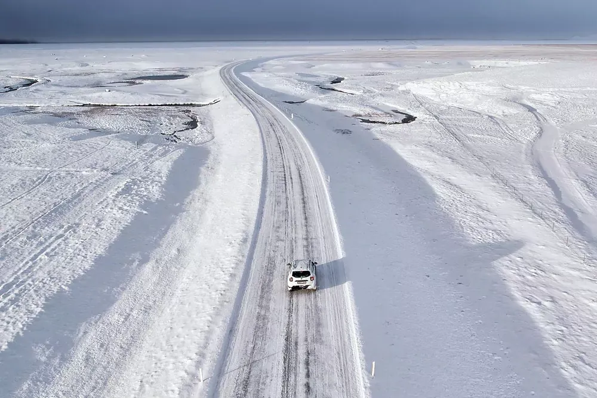
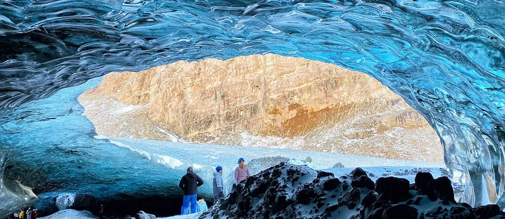
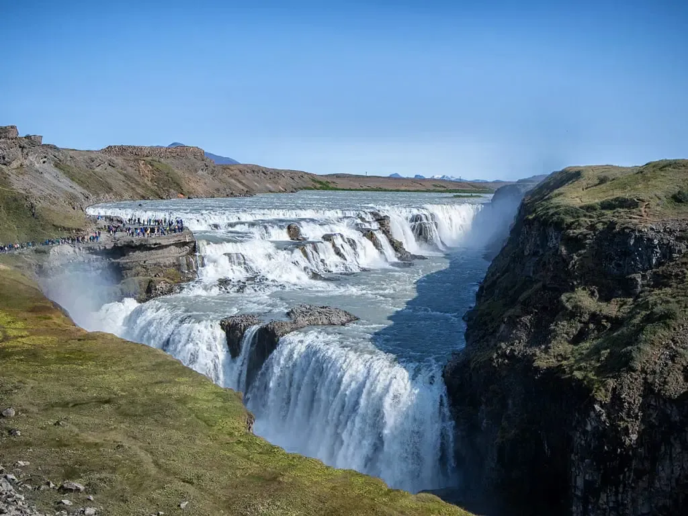
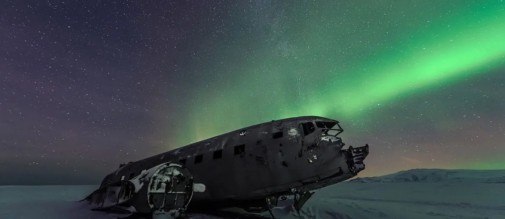
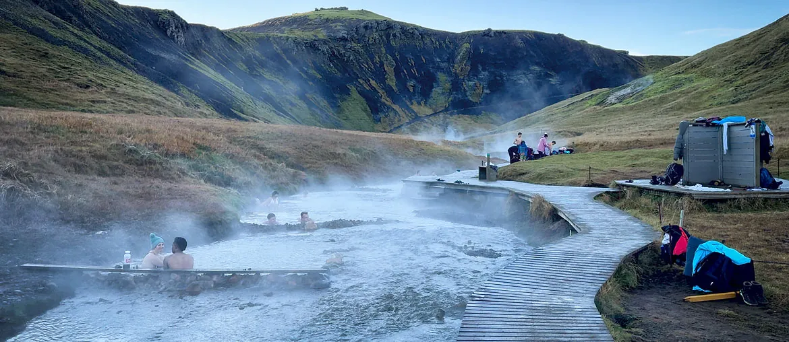
Gotowe plany objazdu Islandii
Cztery trasy na różny czas i porę roku, od kilku dni po dwa tygodnie terenówką. W każdej noclegi, koszty i podpowiedzi, co dodać, a co odpuścić.
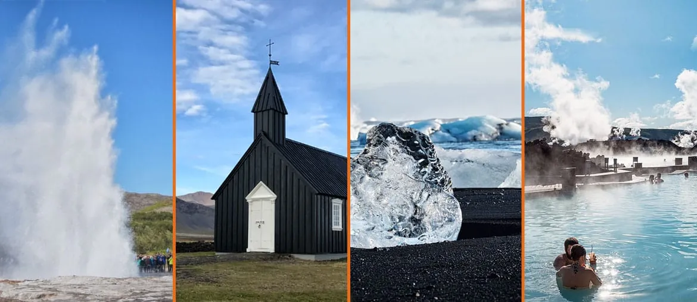
3-7 dniKrótki wyjazd na Islandię
Kiedy jechać, co zobaczyć, gdzie spać i ile to kosztuje, gdy masz tylko kilka dni.
Zobacz plan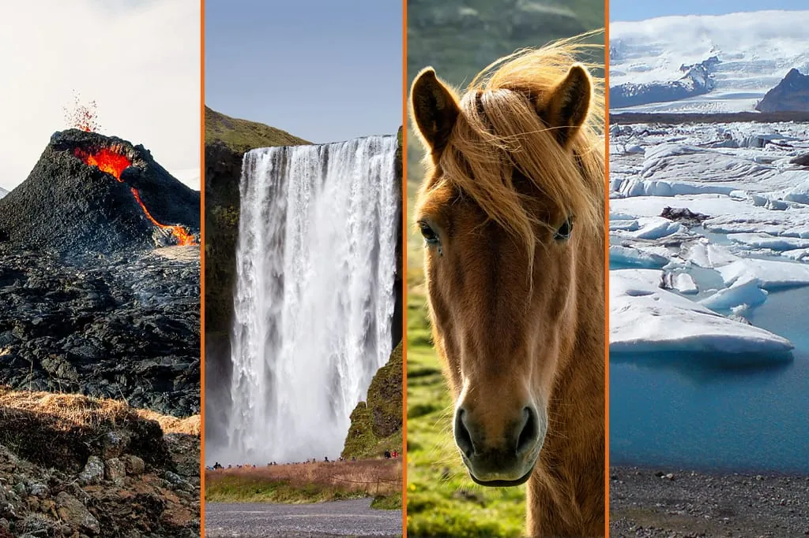
7-13 dniDookoła Islandii
Trasa dookoła wyspy dzień po dniu w 7 dni i pięć sposobów, żeby rozciągnąć ją do 13.
Zobacz plan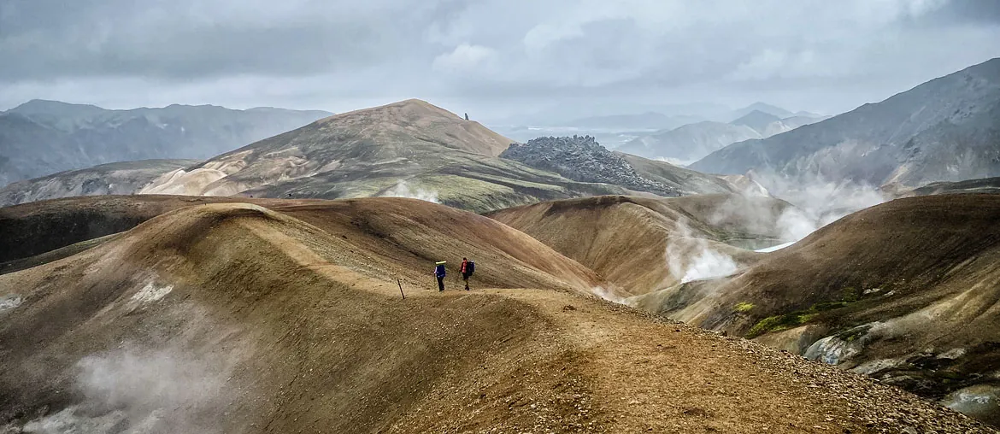
14 dni, 4×4Islandia latem terenówką
Najpiękniejsze miejsca wyspy w dwa tygodnie: szczegółowy plan samodzielnej podróży samochodem 4×4.
Zobacz planWyjazd na Islandię zimą
Dlaczego warto jechać zimą, jak zorganizować samochód, noclegi i atrakcje oraz na co uważać na drogach.
Zobacz planAktualności z Islandii
Erupcje, drogi, rezerwacje schronisk: to, co zmienia plany podróży.
- Rezerwacje chatek na Laugavegur 2027 już otwarte
- Czy czeka nas największa erupcja Svartsengi?
- Ocean zabrał Reynisfjarę
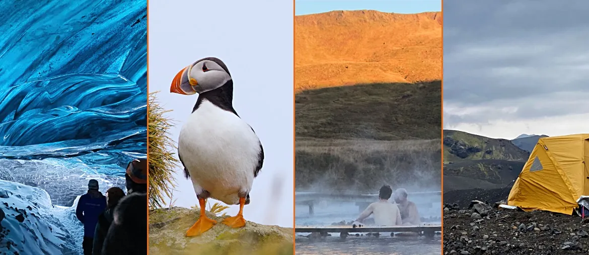
Kiedy najlepiej pojechać na Islandię
Każda pora roku to inna Islandia: zorza i jaskinie lodowe zimą, maskonury i otwarty interior latem.
Czytaj poradnikIslandia pieszo
Laugavegur razem z sąsiednimi szlakami Fimmvorduhals i Hellismannaleid to najpopularniejsza trasa piesza Islandii. Każdy odcinek opisany: przebieg, schroniska, atrakcje i przygotowania.
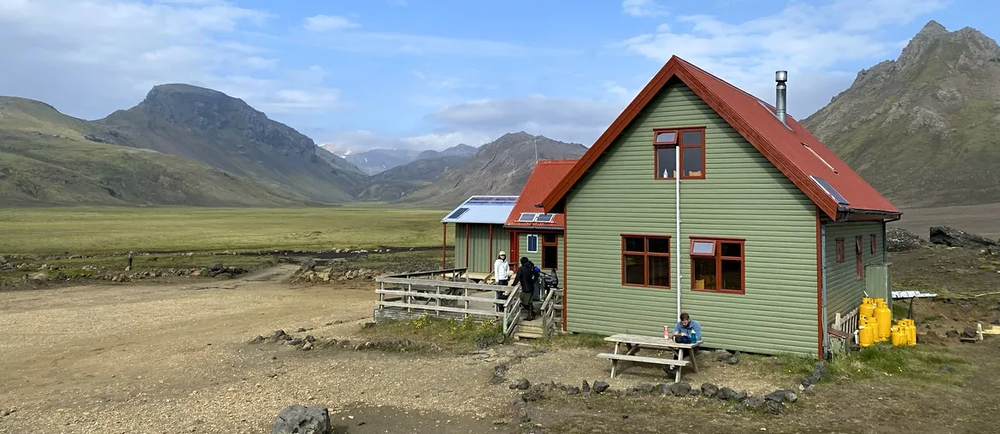
Laugavegur, najpiękniejszy szlak Islandii
Przebieg i długość szlaku, schroniska i pola namiotowe, największe atrakcje po drodze.
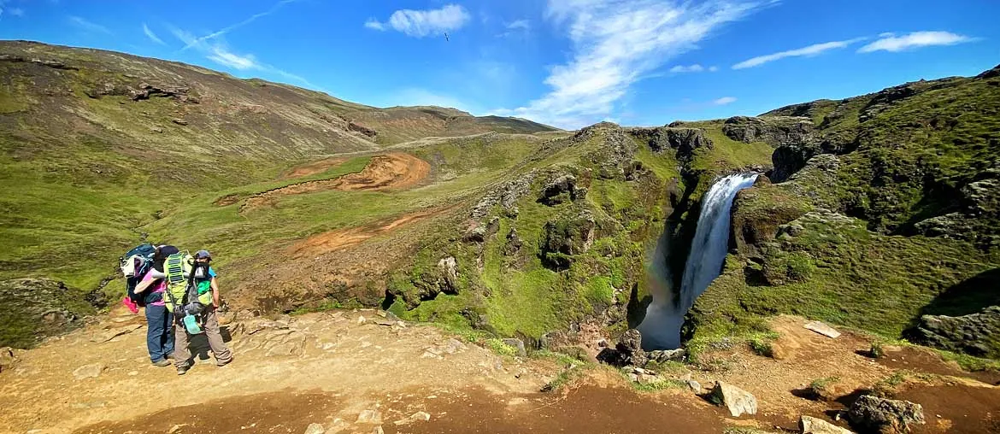
Fimmvorduhals, szlak 20 wodospadów
Opis trasy, mnóstwo zdjęć i podpowiedzi, jak zorganizować wyjście i czego spodziewać się po drodze.
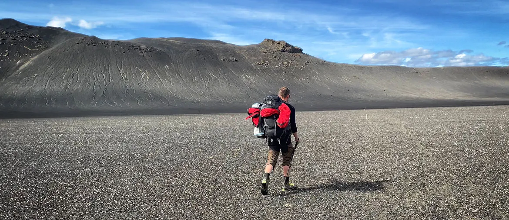
Hellismannaleid, dzika Islandia
Trzydniowy szlak na zachód od Landmannalaugar: pola żużlu, górskie jeziora i zastygła lawa, z dala od tłumów.
Islandzkie Top 10
Najkrótsza droga do najlepszych miejsc: wodospady, plaże, wulkany, kaniony i gorące źródła wybrane z całej wyspy.
Poradniki wideo
Samochód czy kamper, ceny lotów i jedzenia, szlaki i gorące źródła: najważniejsze tematy także w wersji do obejrzenia.
Zanim pojedziesz
Praktyczne poradniki: pogoda, ceny, samochód, drogi i to, jak działa wyspa wulkanów.